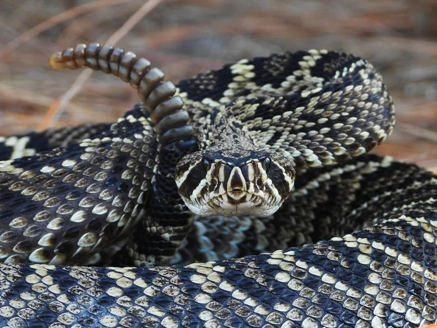

爬行动物 · 动物界
东部菱斑响尾蛇 Crotalus adamanteus

北美东南部体型最大的响尾蛇，背部有菱形斑纹，尾端响环可发声示警，毒性较强，被咬须立即就医。
- 分类
- 门脊索动物门纲爬行纲目有鳞目科蝰科属响尾蛇属
- 栖息环境
- 美国东南部的松林、灌丛、沙地与岩质丘陵
- 地理分布
- 美国东南部沿海平原及佛罗里达半岛
- 保护级别
- IUCN 无危（LC）；非中国原产，在中国无保护级别
物种志
东部菱斑响尾蛇体长 1.2–2.4 米，是北美东部体型最大的响尾蛇。它身体粗壮，头部呈三角形，颊部有热敏感颊窝；体色以黄褐、灰褐或橄榄色为底，背部沿中线排列着一串菱形深色斑块，斑块边缘镶浅色鳞片，尾部末端有角质响环。
它分布于美国东南部的松林、灌丛和沙质地区，多在夜间和晨昏活动，捕食鼠类、兔、鸟类和蜥蜴等。它是卵胎生蛇类，交配后妊娠约 6–7 个月，每胎产 8–29 条幼蛇。东部菱斑响尾蛇毒性较强，毒液含出血毒素，被咬后可致剧痛、肿胀和组织损伤，须立即就医；它受惊时会摇动尾环发出沙沙声示警，遇到时应安静后退、不要靠近。
形态与习性
- 食性鼠类、兔、鸟类和蜥蜴
- 体长1.2–2.4 m
- 体重可达 5 kg 以上
- 寿命约 15–20 年
- 繁殖卵胎生，妊娠 6–7 个月，每胎 8–29 条
- 毒性出血毒素为主，被咬须立即就医
趣味知识
- 东部菱斑响尾蛇是北美东部体型最大的响尾蛇，体长可超过 2 米。
- 它受惊时会摇动尾端的角质响环，发出沙沙声警告对方。
- 它的颊窝能感知温血猎物的热量，便于在夜间精准攻击。